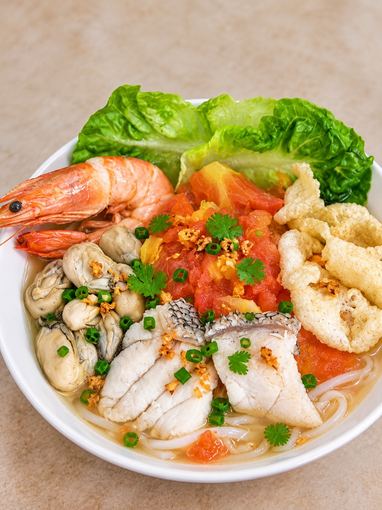

筹备试营业中 · 开放首批 WhatsApp 尝鲜预订
一碗来自沙巴的
番茄海鲜面
🍅 番茄够浓，海鲜够猛！
沙巴山打根啊顺师父掌勺。自熬纯熟番茄果泥红汤，整只生猛海虾、大颗肥美生蚝与厚切石斑鱼片现点现煮！轻点下方食材探秘 👇
👑 实拍镇店全料王

生猛海虾 (Ocean Prawn) 点击查看更多食材 ▾
整只鲜虾在滚烫番茄汤中快速烫熟，虾肉紧致清脆，虾青素自然融入红汤！
点击集鲜气 ✨
Heritage · 从山打根到 Cheras
不用飞去沙巴，在 Cheras 就能吃到这一碗
主理人啊顺师父来自沙巴山打根。自小在海港长大，师父把熟悉的海鲜现煮技艺与反复熬煮的熟番茄红汤带到吉隆坡蕉赖，还原最地道的鲜酸海味。
Flavour · 为什么是番茄汤
天然果酸 · 突出海味
纯熟番茄天然果酸祛除微腥，与海鲜交融回甘，鲜爽不油腻！
酸香
醒胃生津
鲜甜
海产原味
开胃
大口喝光
Visit Store · 门店位置
番茄仔 Tomato Boy · Cheras, KL
📍 马来西亚 吉隆坡 蕉赖 (具体商铺号及试营业日期即将公布)
⏰ 筹备试营业中 · 每日 10:30 AM – 9:30 PM (周一至周日)
🚗 周边备有街区泊车位及便利停车空间，导航无忧。
关注番茄仔社群 · 领第一波开业礼
第一时间获取【开业买一送一】、【优惠券】与【探店隐藏吃法】！